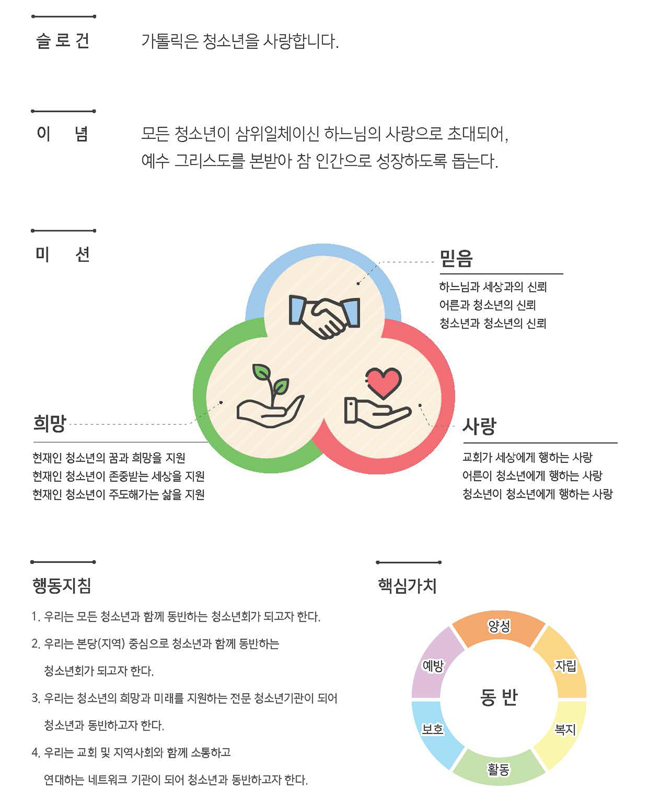
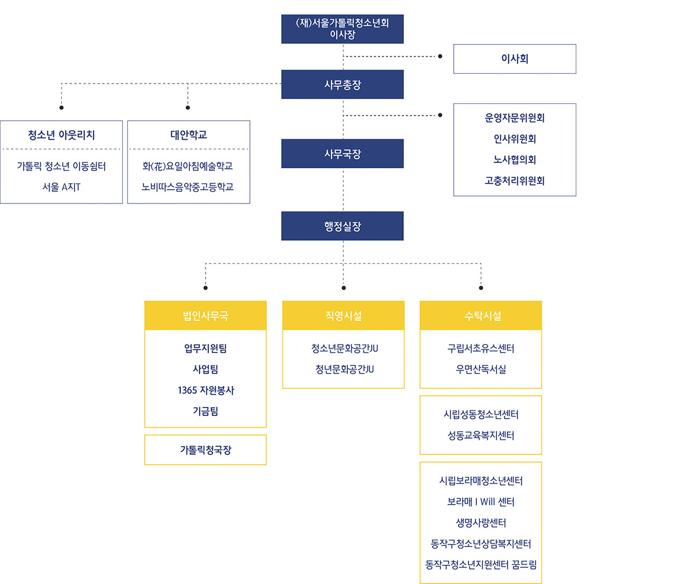

안녕하십니까?
(재)서울가톨릭청소년회 이사장 이경상 바오로 주교입니다.
(재)서울가톨릭청소년회는
“삼위일체이신 하느님의 사랑으로 초대된 청소년들이 예수 그리스도를 본받아 ‘참 인간’으로 성장하도록 돕는다”는 이념 아래에 1999년에 설립되었으며, 현재 청소년들을 위한 직영 및 위탁 시설을 다수 운영하고 있습니다.
우리 법인은,
예수님께서 “어린이들이 나에게 오는 것을 막지 말고 그냥 놓아두라(마르코 10,14)”고 말씀하시며 “어린이들을 끌어안으시고 그들에게 손을 얹어 축복해(마르코 10,16)” 주신 것처럼 특별히 어린이를 사랑하신 그 마음을 본받아, 청소년들이 원하고 필요로 하는 다양한 프로그램을 마련함으로써 세상의 모든 청소년이 행복할 수 있는 환경을 마련코자 노력하며, 아울러 청소년들을 사랑하는 지도자들을 양성하는 데에도 많은 노력을 하고 있습니다.
청소년들이 사랑을 가득 받으며,
예수 그리스도를 닮은'참 인간'으로 성장할 수 있도록 많은 관심 부탁드립니다.

